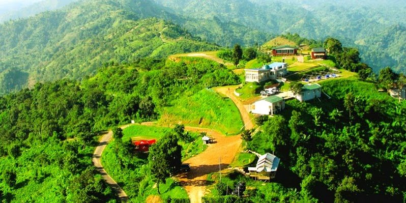

Nilgiri

About Nilgiri
The Nilgiris District is in the southern Indian state of Tamil Nadu. Nilgiri (English: Blue Mountains) is the name given to a range of mountains spread across the borders among the states of Tamil Nadu, Karnataka and Kerala. The Nilgiri Hills are part of a larger mountain chain known as the Western Ghats. Their highest point is the mountain of Doddabetta, height 2,637 m. The district is contained mainly within the Nilgiri Mountains range. The administrative headquarters is located at Ooty (Ootacamund or Udhagamandalam).
Nilgiris District ranked first in a comprehensive Economic Environment index ranking districts in Tamil Nadu (not including Chennai) prepared by the Institute for Financial Management and Research in August 2009.[2] Tea and coffee plantations have been important to its economy.
Shorno Mondir
The golden temple complex inside the Sripuram spiritual park is situated at the foot of a small range of green hills at Thirumalaikodi (or simply Malaikodi) Vellore in Tamil Nadu, India. It is 120 km from Tirupati, 145 km from Chennai, 160 km from Puducherry and 200 km from Bengaluru. The Maha Kumbhabhishekam or consecration of the temple and its chief deity, Sri Lakshmi Narayani or Maha Lakshmi, the goddess of wealth, was held on 24 August 2007, and devotees from all religions and backgrounds are welcome to visit. This temple is gilded with 1,500 kg of pure gold, double the 750 kg gilding of the dome of the Golden Temple at Amritsar.[